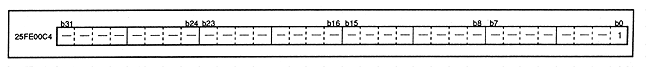
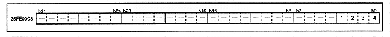

The SCU has a register that specifies the SDRAM configuration. Figure 3.31 shows the SDRAM selection register. This register is located at address 25FE00C4H in the SCU.
Figure 3.31 SCU SDRAM selection bit (register: RSEL) Initial value 00000000H

SDRAM selection bit (1 [bit 0] in Figure 3.31) RSEL (R / W) RAM SELect bit
The SCU has a register that represents the chip version. This register is located at address 25FE00C8H in the SCU. Figure 3.32 shows the version register.
Figure 3.32 SCU version register (register: VER) Initial value 00000000H

Version number (1 to 4 [bit 3 to 0] in Figure 3.32) VER3-0 (R) VERsion number bit3-0
Indicates the SCU chip version. Since there are 4 bits, 0-15 chip versions are supported.